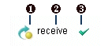
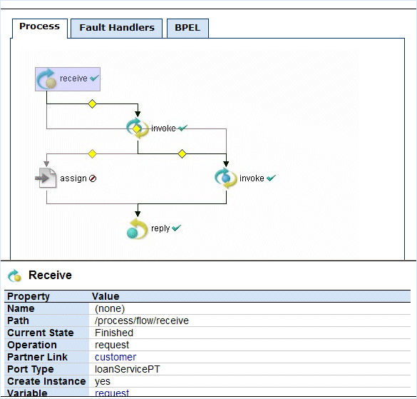

Using the Process Details Graphic View
The Graphic view of Process Details shows the main process flow and the execution path through the process. You can also view the process fault, event, and compensation handlers, if the process definition includes these process-level handlers. The handlers have their own tabs in the view.
In the upper-right panel of the page, you see the main flow of a BPEL process. The process diagram reflects the layout rendering that is part of Active Endpoints BPEL design tool, ActiveBPEL Designer.
Each process activity has an icon, a label, and an execution state indicator, as shown in the following illustration.

|
1 |
Activity icon. Activity icons are the same as those supplied with ActiveBPEL Designer. |
|
2 |
Activity label, which can be the activity type, name, type:name, or custom text |
|
3 |
Execution state indicator. For a description of each indicator, see Using the Process Details Outline View. |
Activities may appear in different colors, to indicate different execution states, as the following table describes.
|
Activity Color |
Execution State |
|---|---|
|
full color |
Executed |
|
muted color |
Ready to execute or inactive |
|
gray |
Dead path |
The Graphic view looks similar to the following example.

To view details, do the following:
- Select an activity from the diagram to view its properties
- Select an activity from the diagram to put the activity in focus in the Outline
To print the diagram, select Print Picture from the right-mouse menu. The diagram prints with the same caption that appears in the graph view. The timestamp indicates when the Process Details page was opened or refreshed.
Printing Tips
- To print a large diagram, select appropriate scaling options in your Printer options dialog, such as Fit to Page or print as x% of Normal Size
- Save the diagram as an image file to print later
See also Using the Process Details Outline View.
Back to ActiveBPEL® Engine Administration Console Help
Copyright (c) 2004-2008 Active Endpoints, Inc.